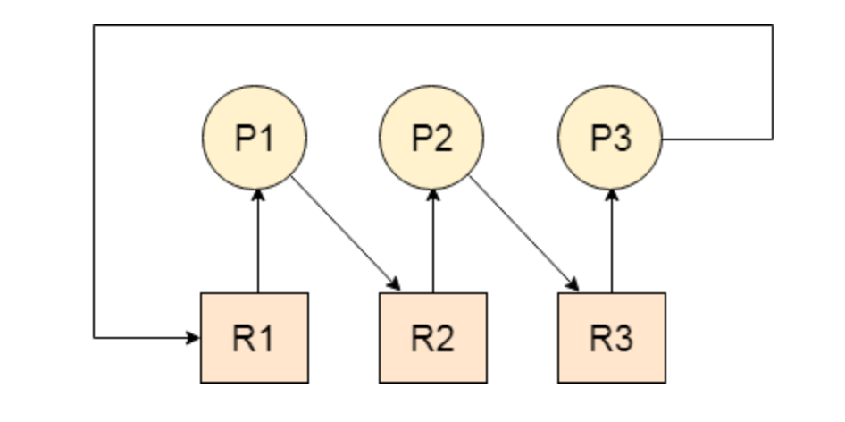

Every process needs some resources to complete its execution. However, the resource is granted in a sequential order.
A DeadLock is a situation where each of the computer process waits for a resource which is being assigned to some another process. In this situation, none of the process gets executed since the resource it needs, is held by some other process which is also waiting for some other resource to be released.
Let us assume that there are three processes P1, P2 and P3. There are three different resources R1, R2 and R3. R1 is assigned to P1, R2 is assigned to P2 and R3 is assigned to P3.
After some time, P1 demands for R1 which is being used by P2. P1 halts its execution since it can't complete without R2. P2 also demands for R3 which is being used by P3. P2 also stops its execution because it can't continue without R3. P3 also demands for R1 which is being used by P1 therefore P3 also stops its execution.
In this scenario, a cycle is being formed among the three processes. None of the process is progressing and they are all waiting. The computer becomes unresponsive since all the processes got blocked.
Consider an example when two trains are coming toward each other on the same track and there is only one track, none of the trains can move once they are in front of each other. A similar situation occurs in operating systems when there are two or more processes that hold some resources and wait for resources held by other(s). For example, in the below diagram, Process 1 is holding Resource 1 and waiting for resource 2 which is acquired by process 2, and process 2 is waiting for resource 1.
It is a classical multi-process synchronisation problem. There is one producer and one consumer. Producer is producing some items until buffer is full, whereas consumer consumes the item until buffer is empty. They share same memory buffer which is of fixed size. But both cannot access the memory buffer at the same time.
Get-Started
The banker's algorithm is a resource allocation algorithm and deadlock avoidance algorithm that tests for safety by simulating the alocation for predetermined maximum possible amounts of all resources and making decision whether allocation should be allowed or not.
Get-Started
There are 5 philosophers sharing a circular table and they eat and think alternatively. There is a bowl of rice for each philosophers and 5 chopsticks. A philosopher needs both their right and left chopstick to eat. A philosopher may eat if there are both chopsticks available else puts down their chopstick and begin thinking again.
Get-Started